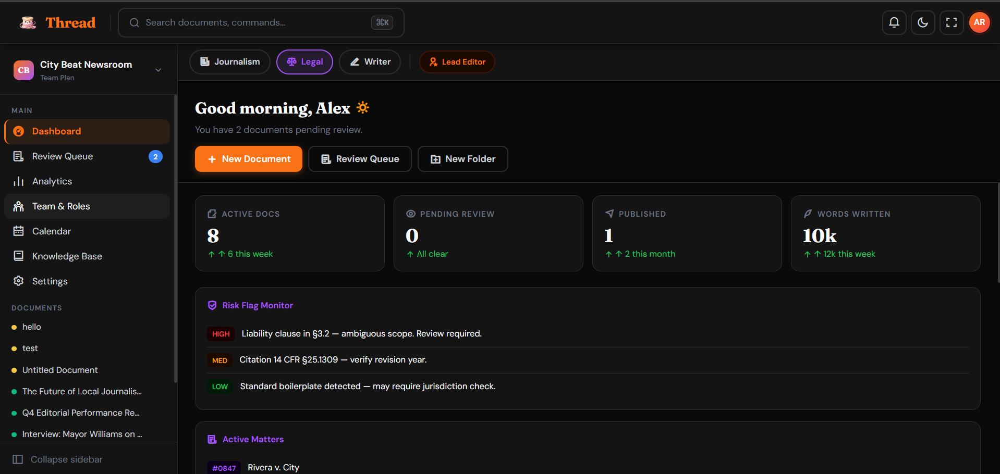
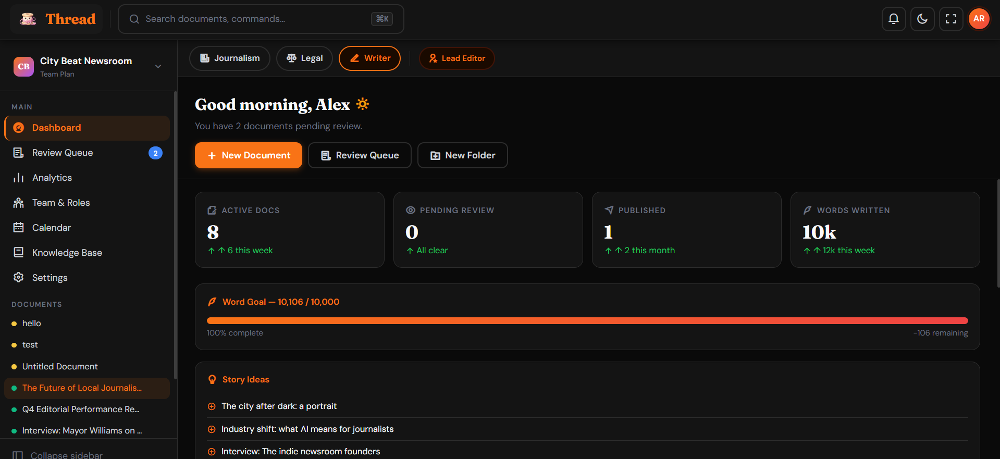
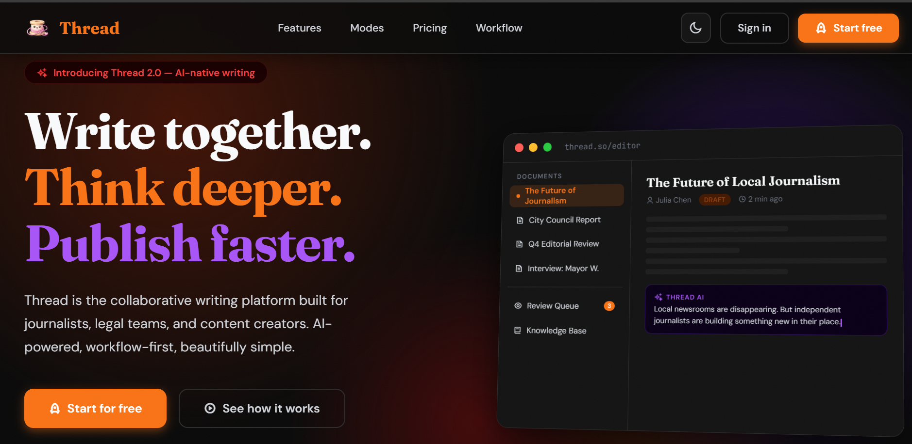
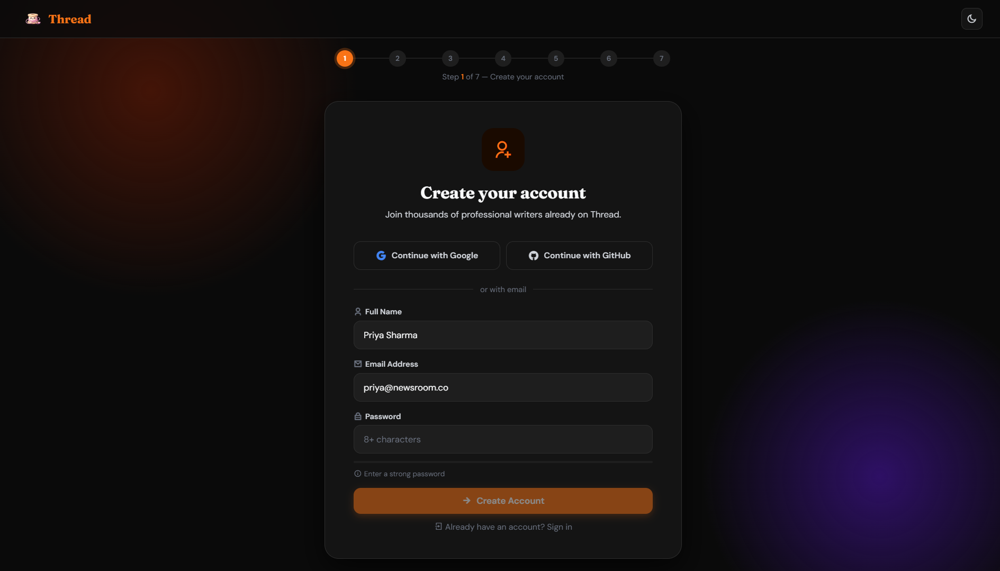
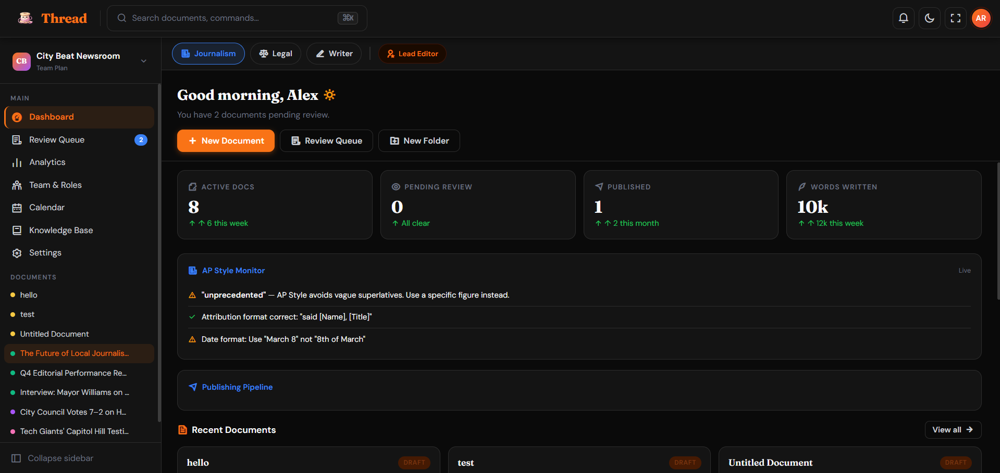
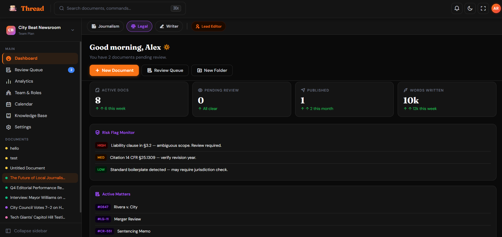
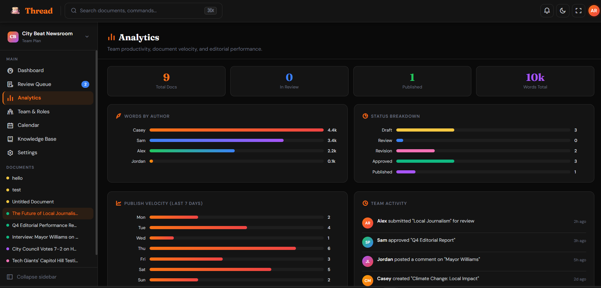
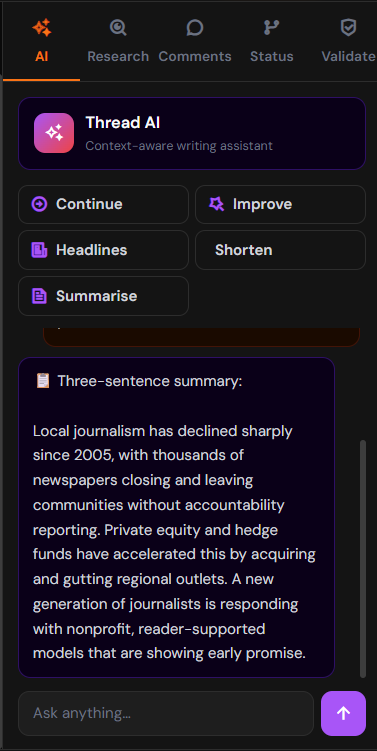

An intelligent, profession-aware collaborative workspace for knowledge-driven teams.
Hackathon UI/UX Prototype
What it is: A web-based SaaS platform that unifies structured knowledge, collaborative drafting, validation systems, and workflow management.
Journalists, legal professionals, and content writers operating in complex environments.
Current tools are disconnected. Thread provides contextual awareness, continuity, and role sensitivity.

Writers, journalists, and legal professionals currently rely on a disconnected stack of generic tools.
Jumping between Docs (drafting), Slack (collaboration), Asana (workflows), and Wikis (knowledge) breaks focus and lowers quality.
A lawyer sees the exact same interface as a blogger. Generic tools lack structural support for profession-specific validation (like AP Style vs Bluebook).
Approvals happen via email strings, edits get lost in version histories, and final publishing requires manual porting to CMS engines.
Standard documents lack nuanced roles. "Lead Editors" and "Writers" experience the same unstructured access to files.
Thread replaces the disconnected stack with a single, cohesive experience. The UI communicates professional awareness through layout, panels, and workflow structures.

From initial discovery to a fully structured, multi-role workspace.
Designed to immediately communicate differentiation. Focuses on the "Writing together, thinking deeper" narrative.


A 7-step wizard capturing user intent to pre-configure the interface. This ensures the "blank slate" problem is solved immediately.
When a user is in Journalism mode, the interface shifts slightly to accommodate fast-paced verification and publishing pipelines.
Real-time checks against journalistic standards.
Visualizing what's actively in the queue or published.


Switching to Legal mode radically updates the dashboard widgets. Emphasis shifts from publishing speed to accurate risk management.
Different roles — Lead Editor, Reviewer, Writer, Publisher, Associate — experience tailored interfaces based on permissions.
Full view. Access to the comprehensive Analytics dashboard, team activity tracking, and final approval queues.
Focused view. Analytics and team management navigation links are hidden. The interface emphasizes drafting and personal word goals.
Beyond the core dashboard, Thread provides specialized views for managing the organization's output.
Live CSS-driven charts for Word Velocity and Author Breakdown, paired with an organizational Activity Feed.
A visual timeline showing upcoming deadlines and the active publish schedule at a glance.


The "Intelligence Layer" feels integrated rather than intrusive. The right-side panel is designed for context.
How the frontend delivers this cohesive experience.
The leap from an interactive prototype to a production-ready application.
The layout adapts flawlessly on the frontend. Next steps involve linking this to a Node.js/PostgreSQL backend utilizing CRDTs (like Yjs) for the real-time multiplayer editor.
Wiring the Intelligence Panel logic to an LLM provider (like Anthropic Claude or OpenAI) utilizing context-windows fed by the user's specific Knowledge Base.
Thread — Reimagining the Professional Workspace.